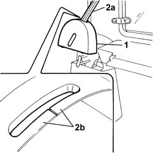
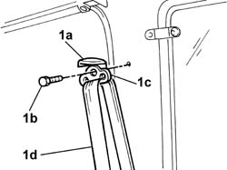
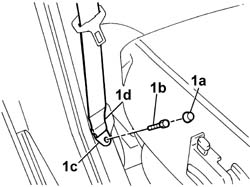
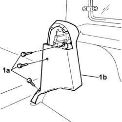

7040H42 rear pillar trim - r r
- Path
- Procedures > 70 FITTINGS > 7040 BODYSHELL INTERIOR TRIMS AND FITTINGS > 7040H roof panel lining > 7040H42 rear pillar trim - r r
- Kind
- repair procedure (removal / refitting; the operation number is the code)
- Applies to
- all engines; all production periods
- Interactive page
- https://sloeber94.github.io/elrnDB-fDbl/en/#/2585150
Applies to: all engines; all production periods; only with equipment: Doblò trim level
 Removing
Removing
 Refitting
RefittingOp. 7040H80 REAR PARCEL SHELF - R.R.
Lower the rear seat backrest.
1. Remove the upper part of the rear pillar cover.
2. Remove the rear seat belt (2a) via the slit (2b).

Applies to: all engines; all production periods; only with equipment: Doblò trim level
1. Open the plastic protection (1a), undo the fixing bolt (1b) and remove the upper fastening (1c) for the rear seat belt (1d).

Applies to: all engines; all production periods; only with equipment: Doblò trim level
1. Remove the plastic cap (1a), undo the bolt (1b) and remove the lower fastening (1c) for the rear seat belt (1d).

Applies to: all engines; all production periods; only with equipment: Doblò trim level
Place the rear seat belt at the side.
1. Undo the bolts (1a) and remove the rear pillar cover (1b).

Applies to: all engines; all production periods; only with equipment: Doblò trim level
Refitting
RemovingFit the lower trim and secure it using the bolts.
Position the seat belt and tighten the upper and lower fixing bolts to torque.
 | Fastening | Component | Ø | Value (daNm) |
|---|---|---|---|---|
- | Bolt | REAR SEAT BELT | M7/16'' | (lower) 4 |
| Fastening | Component | Ø | Value (daNm) |
|---|---|---|---|---|
- | Bolt | REAR SEAT BELT | 7/16" | (upper) 4 |
Fit the plastic cap for the lower seat belt fastening.
Close the plastic protection for the upper seat belt fastening.
Position the seat belt through the slit in the upper part of the pillar cover.
Fit the upper part of the rear pillar cover.
Lift up and reposition the rear seat backrest.